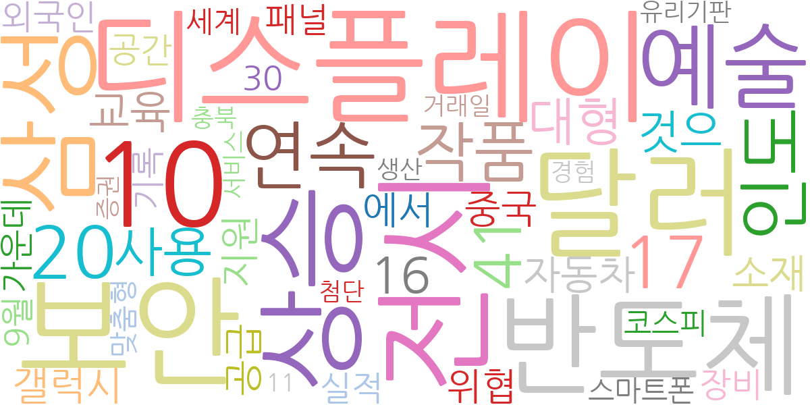
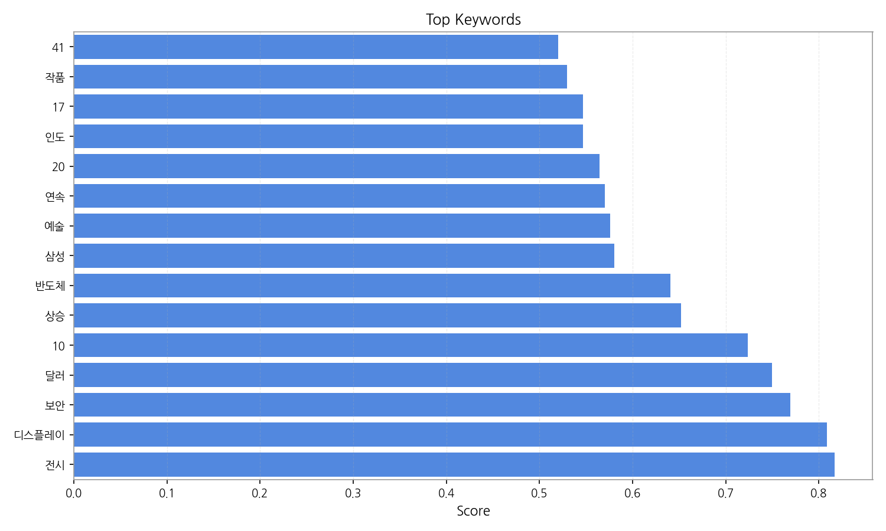
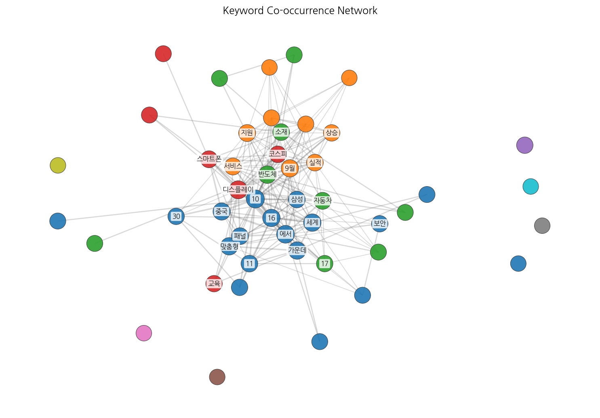
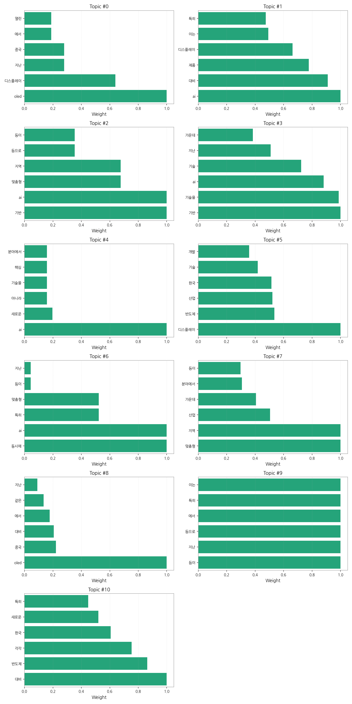
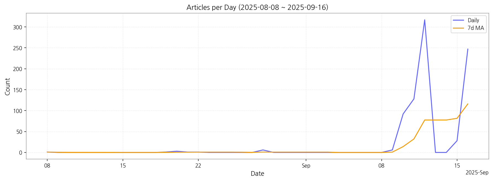

1) 상위 토픽을 3개 주제로 묶어 핵심 맥락을 설명하면 다음과 같습니다. 첫째, AI 기반 기술 개발 및 산업 동향은 AI 기술을 기반으로 한 맞춤형 제품 및 서비스 개발, 특히 디스플레이 및 반도체 산업에서의 AI 활용에 대한 뉴스가 주를 이룹니다. 둘째, OLED 및 디스플레이 산업 경쟁 심화는 한국과 중국 기업 간의 OLED 디스플레이 기술 경쟁, 시장 점유율 확보를 위한 기술 개발 및 투자 현황을 다룹니다. 셋째, 한국 반도체 산업의 경쟁력 강화 및 AI 대비는 한국 반도체 산업의 경쟁력 유지를 위한 기술 개발과 AI 시대에 대한 대비 전략, 새로운 기술 개발 및 시장 변화에 대한 뉴스를 포함합니다.
2) 최근 변화/스파이크를 짚어보면, 9월 10일부터 9월 12일 사이에 기사 수가 급격하게 증가(1일 평균 100건 이상)하는 현상이 나타났습니다. 이는 특정 이슈 또는 정부 정책 발표 등 외부 요인에 의한 것으로 추정되며, 해당 기간의 뉴스 내용 분석을 통해 구체적인 원인을 파악해야 합니다.
3) 실무 인사이트 3가지:

| Rank | Keyword | Score |
|---|---|---|
| 1 | 전시 | 0.817 |
| 2 | 디스플레이 | 0.809 |
| 3 | 보안 | 0.769 |
| 4 | 달러 | 0.750 |
| 5 | 10 | 0.724 |
| 6 | 상승 | 0.652 |
| 7 | 반도체 | 0.641 |
| 8 | 삼성 | 0.580 |
| 9 | 예술 | 0.576 |
| 10 | 연속 | 0.570 |
| 11 | 20 | 0.565 |
| 12 | 인도 | 0.547 |
| 13 | 17 | 0.546 |
| 14 | 작품 | 0.530 |
| 15 | 41 | 0.520 |




1) 상위 토픽을 3개 주제로 묶어 핵심 맥락을 설명하면 다음과 같습니다. 첫째, AI 기반 기술 개발 및 산업 동향은 AI 기술을 기반으로 한 맞춤형 제품 및 서비스 개발, 특히 디스플레이 및 반도체 산업에서의 AI 활용에 대한 뉴스가 주를 이룹니다. 둘째, OLED 및 디스플레이 산업 경쟁 심화는 한국과 중국 기업 간의 OLED 디스플레이 기술 경쟁, 시장 점유율 확보를 위한 기술 개발 및 투자 현황을 다룹니다. 셋째, 한국 반도체 산업의 경쟁력 강화 및 AI 대비는 한국 반도체 산업의 경쟁력 유지를 위한 기술 개발과 AI 시대에 대한 대비 전략, 새로운 기술 개발 및 시장 변화에 대한 뉴스를 포함합니다.
2) 최근 변화/스파이크를 짚어보면, 9월 10일부터 9월 12일 사이에 기사 수가 급격하게 증가(1일 평균 100건 이상)하는 현상이 나타났습니다. 이는 특정 이슈 또는 정부 정책 발표 등 외부 요인에 의한 것으로 추정되며, 해당 기간의 뉴스 내용 분석을 통해 구체적인 원인을 파악해야 합니다.
3) 실무 인사이트 3가지:
| Idea | Target | Value Prop | Score |
|---|---|---|---|
| AI 기반 디스플레이 품질 검사 플랫폼 | 디스플레이 제조업체(LG디스플레이, 삼성디스플레이 등), 전자제품 조립업체(KR, JP) | AI 기반 자동화 검사 시스템을 통해 검사 시간 단축 및 인건비 절감, 검사 정확도 향상을 제공합니다. 고해상도 디스플레이 검사에 특화된 알고리즘을 통해 경쟁사 대비 높은 정확도를 자랑합니다. | 4.50 |
| 모빌리티 디스플레이 통합 관리 플랫폼 | 자동차 제조업체, 모빌리티 서비스 제공업체(JP, EU) | 모빌리티 디스플레이를 통합 관리하고, 원격 업데이트 및 보안 관리를 제공하는 플랫폼입니다. 다양한 디스플레이 시스템과의 호환성을 확보하고, 차량 운영 데이터 분석을 통한 효율적인 관리를 지원합니다. 차별화 포인트는 모빌리티 특화 보안 기능 강화입니다. | 4.20 |
| 디스플레이 사이니지 광고 플랫폼 서비스 | 디지털 사이니지 운영 기업, 대형 쇼핑몰, 백화점, 공공기관(KR) | AI 기반의 타겟팅 광고 기능과 실시간 효과 측정 시스템을 제공하여 광고 효율을 극대화합니다. 다양한 사이니지 기기와의 호환성을 확보하여 편리한 관리를 지원합니다. 차별화 포인트는 실시간 데이터 기반의 동적 광고 노출 최적화입니다. | 4.00 |
| 디스플레이 산업 경쟁력 분석 데이터 서비스 | 디스플레이 제조업체, 투자 기관, 시장 조사 기관(KR, JP) | 시장 동향, 경쟁사 분석, 기술 트렌드 등을 포함한 디스플레이 산업 경쟁력 분석 데이터를 제공합니다. AI 기반의 데이터 분석 기술을 통해 시장 변화를 예측하고, 전략 수립에 필요한 인사이트를 제공합니다. 차별화 포인트는 실시간 데이터 기반의 예측 분석 기능입니다. | 3.80 |
| B2B 전자부품 조달 플랫폼 파트너십 | 전자제품 제조업체, 중소기업(KR, EU) | 다양한 전자부품 공급업체와의 파트너십을 통해 원활한 부품 조달을 지원합니다. AI 기반의 수요 예측 및 재고 관리 시스템을 통해 효율적인 재고 관리를 제공합니다. 차별화 포인트는 신뢰할 수 있는 공급망 확보 및 리스크 관리 지원입니다. | 3.50 |